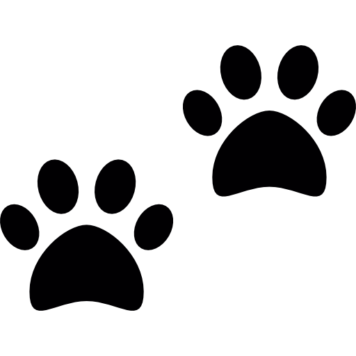

Meus Pets
Esta é uma página dedicada aos meus amados animais de estimação.
Desde que me entendo por gente sou apaixonada por animais, e convivo com eles desde sempre.
Já tive gatos, cachorros, peixes, pássaros e, até mesmo, uma tartaruga!
Todos sempre muito amados e, curiosamente, todos adotados ou resgatados diretamente da rua.
Como disse, já tive muitos animais ao longo dos meus 21 anos de vida, então, decidi fazer esta página os homenageando
mas, por terem sido muitos vou falar apenas dos meus últimos e mais recentes
amigos de 4 patas.
| NOME | Lady | Sofia | Mel | Fumaça | Eva | Juliete | Nêni | Mecz |
|---|---|---|---|---|---|---|---|---|
| GÊNERO | Feminino | Feminino | Feminino | Feminino | Feminino | Feminino | Masculino | Masculino |
| PORTE | Pequeno | Médio | Grande | Médio | Médio | Médio | Médio | Médio |
| RAÇA | Pinscher | Sem Raça Definida | Sem Raça Definida | Sem Raça Definida | Sem Raça Definida | Sem Raça Definida | Sem Raça Definida | Sem Raça Definida |